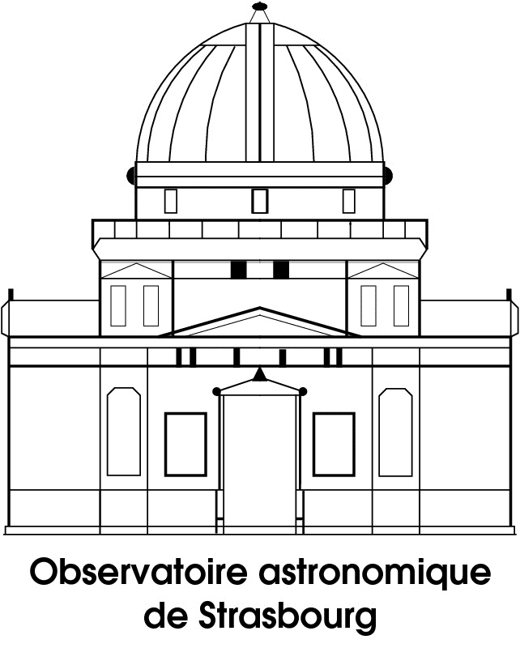
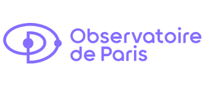
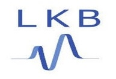
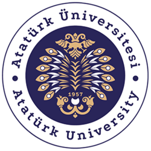
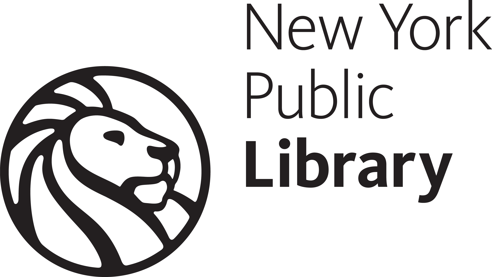
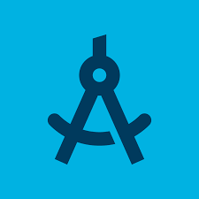
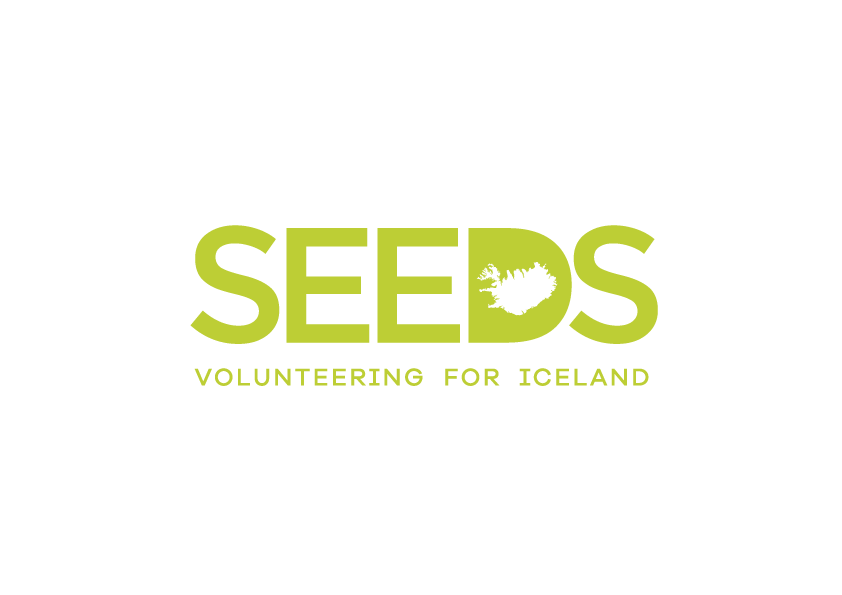

course of life.
academic background and some life experiences.
click on the cards to learn more. one can be more important than the other. choose wisely.
we can also meet on linkedin
publications.
accurate cosmological emulator for the probability distribution function of gravitational lensing of point sources.
kinetic coupled tachyon: a dynamical system analysis.
education.

Ph.D. Candidate in Cosmology.
Federal University of Espírito Santo.
supervisor Valerio Marra.
co-supervisors: Stefano Borgani & Tiago Castro.
Master's in Physics.
Sorbonne University.
M1: paris physics master (PPM) program.
M2: nuclei, particles, astroparticles and cosmology (NPAC) program.


B.Sc. in Electrical Engineering (minor in Physics Engineering).
Istanbul Technical University.
Included Erasmus exchange at Sorbonne University.
graduation project: a study on quantum computation: comparison between classical and quantum logic gates with applications.
teaching experience.
Física 3 - Introdução à Teoria Eletromagnética.
UFES.
Conducted exercise sessions for bachelor students in Electromagnetics.
Introdução à Cosmologia e Gravitação.
UFES.
Gave an introductory lecture on general relativity and cosmology, and introduced the astropy package to do basic cosmological calculations.
talks.
Presentation of the ACE-lensing emulator project.
The Institute for Fundamental Physics of the Universe (IFPU).
Talk about cosmology and ACE-lensing emulator.
Boğaziçi University.
grants.
Fapes Scientific Technical Internship.
Estágio Técnico Científico.
3-month research stay at the Trieste Astronomical Observatory (OATs).
Invited Research Visit at the HECAP Section.
ICTP.
3-month research stay supported by an ICTP grant.
International Mobility Grant.
Science and Engineering Faculty of Sorbonne University.
Erasmus Grant.
1 year at Sorbonne University.
skills.
programming & computing.
machine learning.
computing environment.
languages
experiences.
Waiter.
Great Canadian Pub.
worked from 16:00 to 03:00, 6 days a week. 🥵
Intern.
Strasbourg Astronomical Observatory (GALHECOS).
Tested Modified Newtonian Dynamics (MOND) with SDSS MaNGA galaxy pairs. Modeled rotation curves and external field effects.
supervisors: Oliver Müller & Benoit Famaey.


Intern.
Observatory of Paris (SYRTE).
Worked on relative positioning of satellites. Analyzed orbit mechanics and distance data from RINEX, POE, and sp3 formats using NumPy.
supervisor: Pacôme Delva.
Intern.
Kastler–Brossel Laboratory.
Tailored speckle statistics for non-linear imaging using Blind Structured Illumination Microscopy.
supervisor: Hilton B. de AGUIAR.

Engineer.
Enwair (a startup company).
Worked on the design of a motor driver circuit for an induction motor.
Intern.
Atatürk University - Application and Research Center for Astrophysics
Worked in Eastern Anatolia Observatory. Completed a controlled relay project over wifi with Raspberry Pi 3, a GUI is designed by using PyQt5.

Intern.
Pamukova HEPP, Karel Elektrik Üretim A.Ş.
Located on the Sakarya river, Pamukova HEPP is owned by Karel Elektrik Üretim A.Ş., founded in 1997. It has 3 Generators (9.3 MW total power).
Intern.
ITU High Voltage Laboratory
Worked on the maintenance of some experiment tools like Van de Graaff generator, Tesla Coil, etc. and designed and manufactured a Faraday Cage under the supervision of Prof. Dr. Özcan Kalenderli.
I have worked in the meeting department of the library for three weeks, welcoming people, answering their questions about library's sections.

Atölye Eğitim is a private teaching academy for high school students. I helped teachers and giving brief repetition lessons in physics and math.

SEEDS is an Icelandic non-governmental, non-profit volunteer organisation designed to promote intercultural understanding and environmental protection. I have been at Úlfljótsvatn Outdoor and Scout Center for 3 weeks. My teams tasks were reconstruction, planting etc...

projects.

Founder & Team Leader.
ITU Rover Team.
Led a 32-student team to design and build a Mars rover prototype (1m x 1m x 0.6m, 40kg) with a 6kg robotic arm.
Participated in the University Rover Challenge at Mars Desert Research Station. Placed 13th out of 30 finalists.
Member & Leader.
ARIGE (ITU Robotics).
Participated in 10+ domestic and international robotic competitions (RobotChallenge 2016, etc.). Designed and manufactured custom chassis, integrated sensors, motors, and microcontrollers.
extracurricular activities.
instructor & organiser.
arduino, python, numpy courses & science talks.
taught 6-week unofficial technical courses to itü students, introducing fundamental programming and hardware concepts.
organized weekly meetings discussing various scientific topics, fostering communication and critical thinking skills.